Soluções para a Poluição
Poluição do Ar:
Utilização de transportes alternativos mais sustentáveis, como bicicleta, transporte público ou carros elétricos;
Redução do uso de energia em casa através de práticas de eficiência energética;
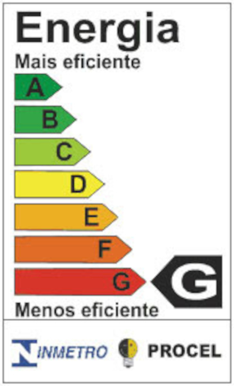
Evitar queimar resíduos sólidos ao ar livre;
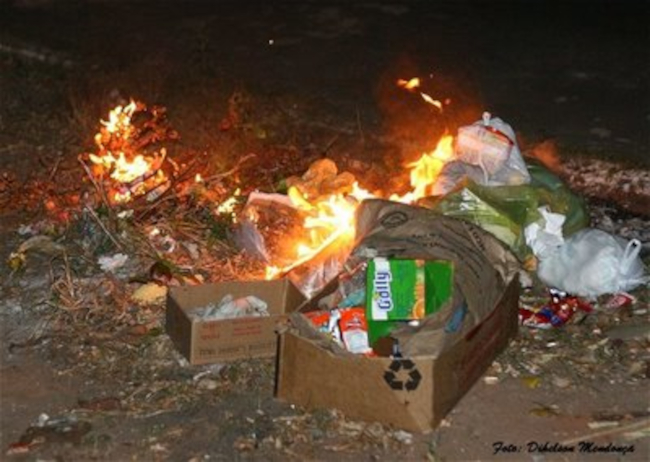
Utilizar churrasqueiras elétricas ou a gás, que emitem menos poluentes do ar, ou optar por churrascos em áreas ao ar livre com boa ventilação, minimizando assim a poluição do ar.
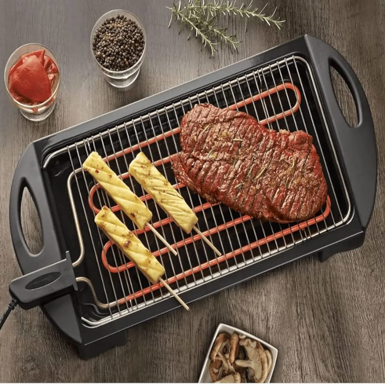
Evitar o uso de geradores a diesel ou aquecedores a gás em ambientes internos, optando por soluções alternativas, como sistemas de aquecimento elétrico ou a utilização de lareiras a álcool.

Poluição do Solo:
Praticar a coleta seletiva de resíduos, separando materiais recicláveis do lixo comum;
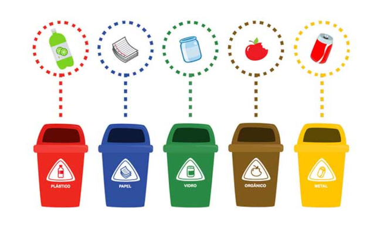
Compostagem de resíduos orgânicos para evitar a sobrecarga de aterros sanitários;
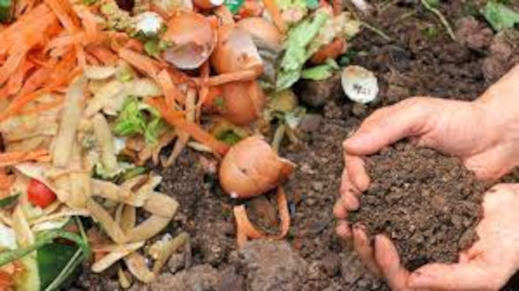
Optar por produtos de limpeza e pesticidas naturais e menos tóxicos;
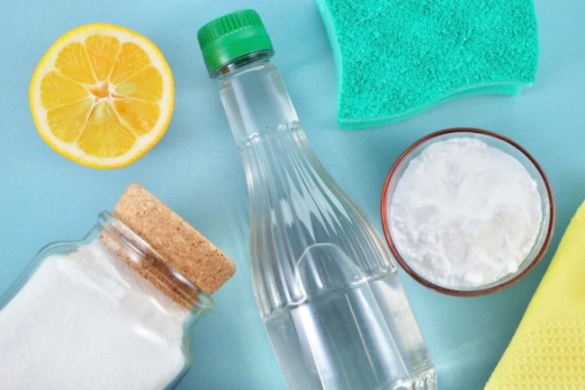
Optar por métodos de jardinagem orgânica, como o uso de adubos naturais e controle biológico de pragas, reduzindo assim a necessidade de pesticidas e herbicidas químicos;
Encaminhar pilhas e baterias usadas para pontos de coleta específicos, como lojas ou postos de reciclagem, garantindo o descarte adequado e a reciclagem dos materiais;
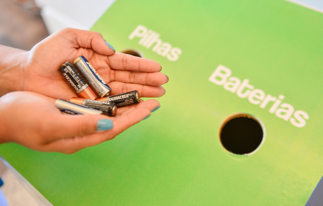
Descartar corretamente os resíduos de construção civil em locais apropriados, como pontos de coleta de entulho ou aterros licenciados, evitando assim a poluição do solo por substâncias nocivas.
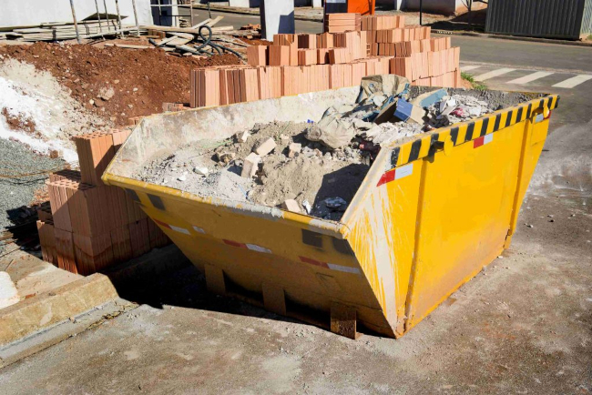
Poluição da Água:
Disposição adequada de resíduos domésticos, como encaminhar óleo de cozinha usado para reciclagem;
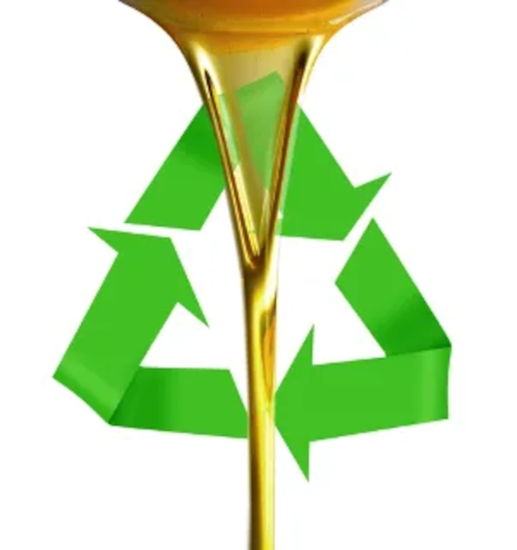
Utilizar produtos de limpeza biodegradáveis;

Promover a conscientização sobre a importância da preservação da água;
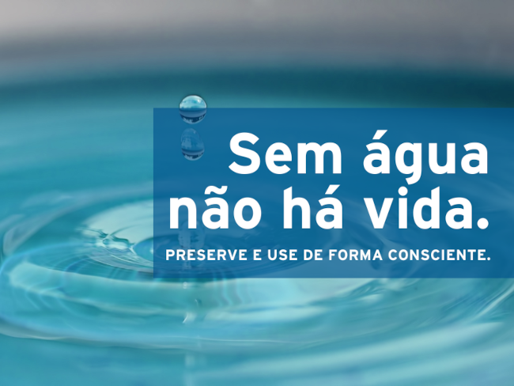
Participar de campanhas de limpeza de praias e rios;
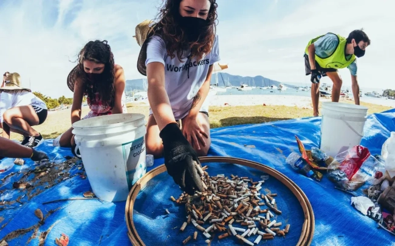
Descartar medicamentos vencidos ou não utilizados em postos de coleta de medicamentos, farmácias ou unidades de saúde, garantindo assim o descarte adequado e a prevenção da contaminação da água;
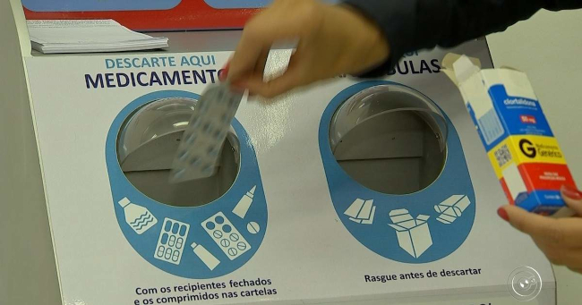
Realizar a lavagem de veículos em locais apropriados, como postos de lavagem que possuem sistemas de tratamento de água, ou utilizar produtos de limpeza biodegradáveis que minimizem o impacto ambiental;
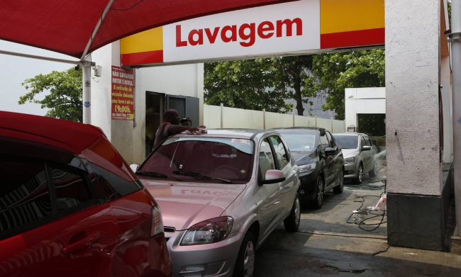
Utilizar fertilizantes de forma moderada e seguindo as recomendações de dosagem, evitando o excesso de nutrientes que podem se infiltrar no solo e atingir corpos d'água próximos.
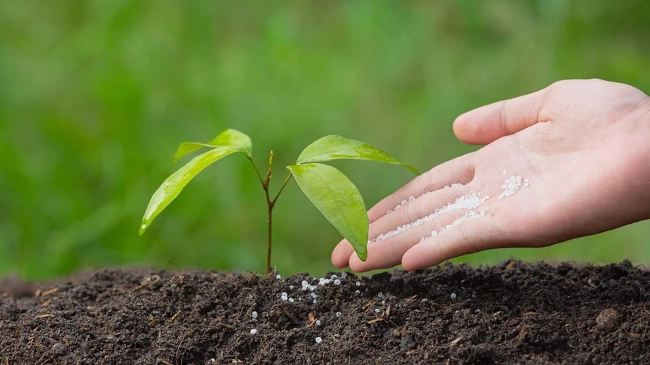